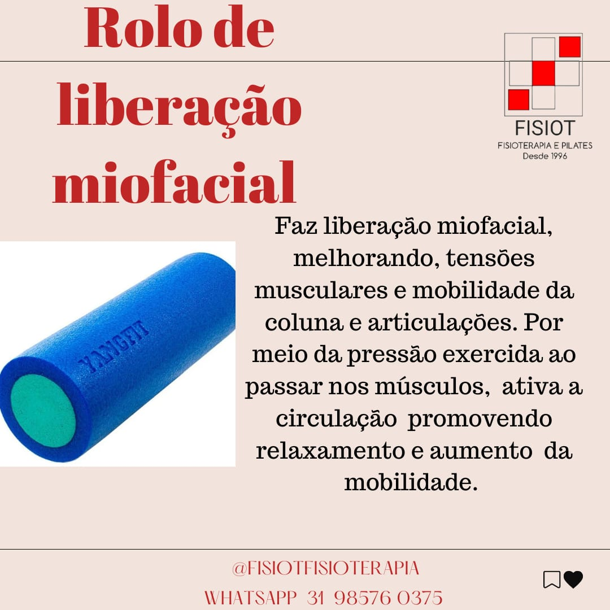
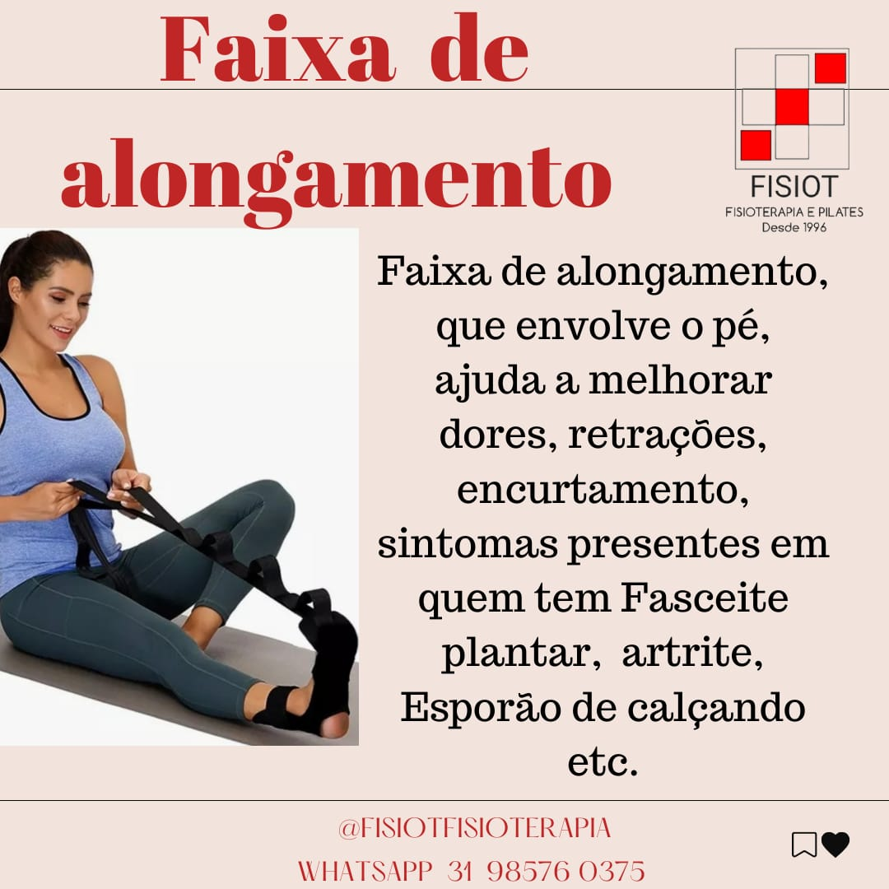
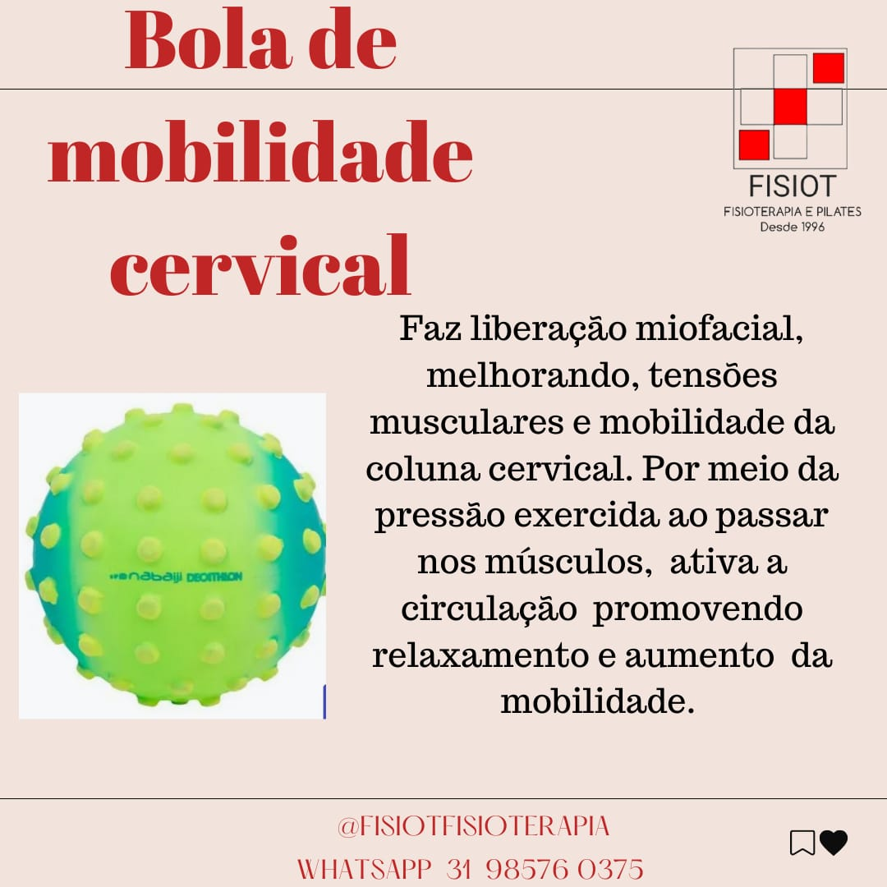
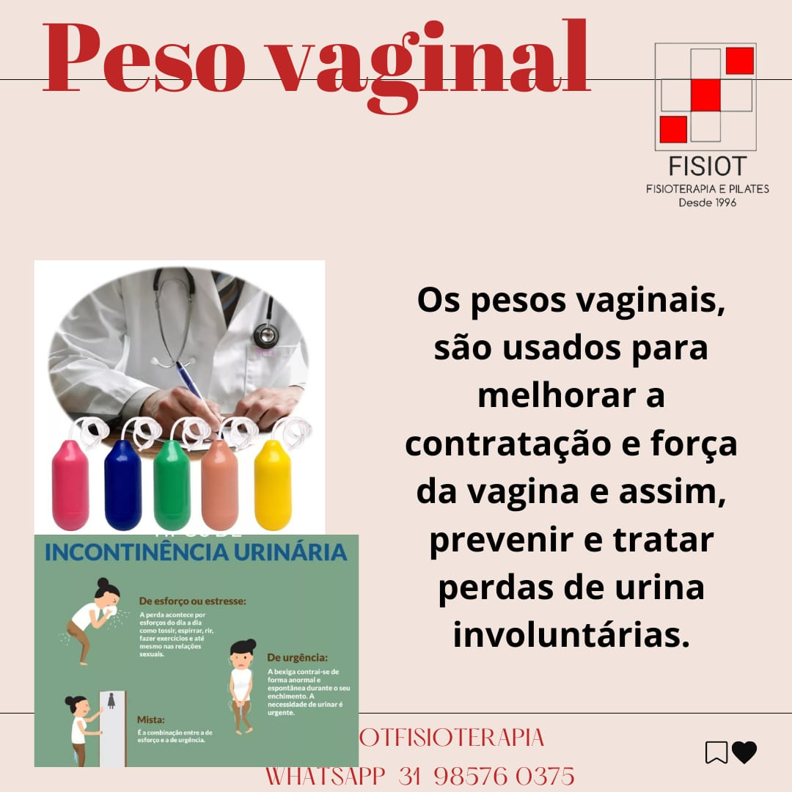
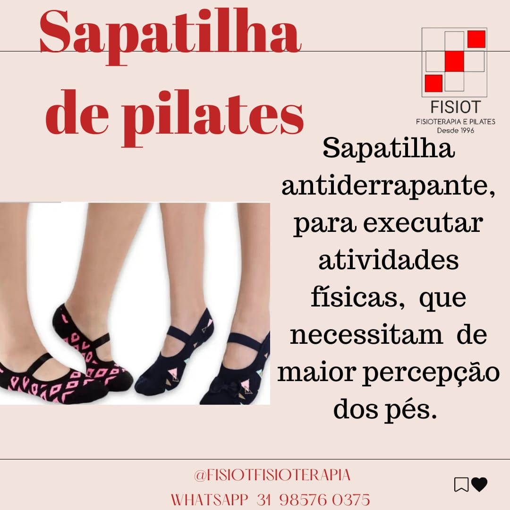
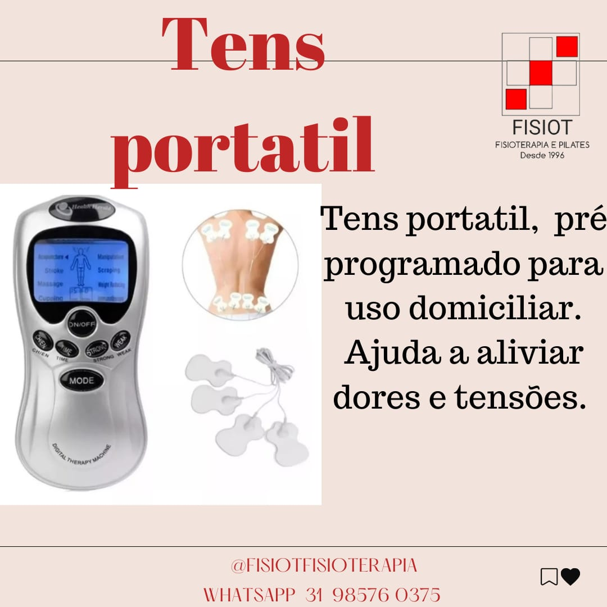
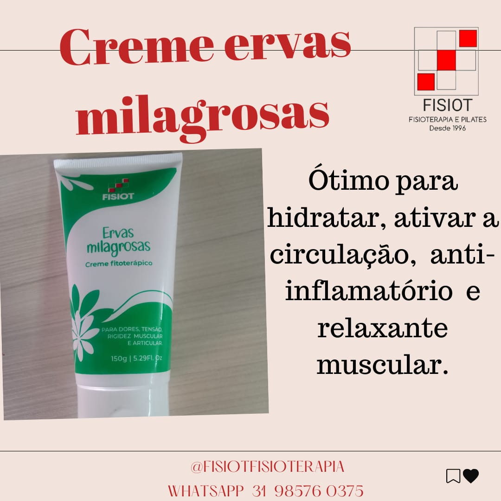
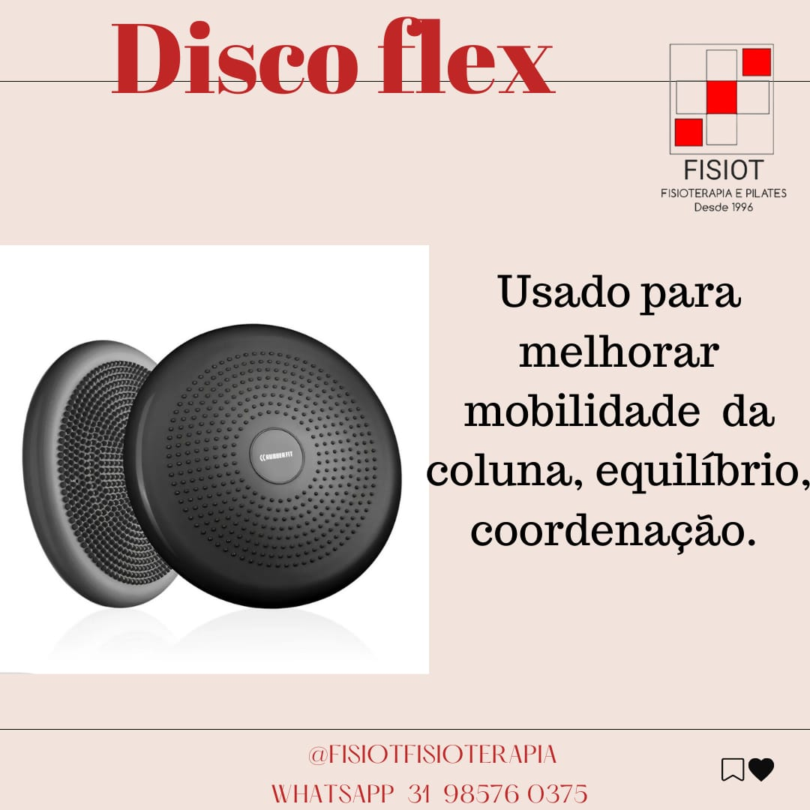

🛍️ Loja Fisiot — Produtos para seu Tratamento

Rolo Miofascial

Faixa Elástica

Bola Pilates

Pesos Tornozelo

Sapatilha Pilates

TENS / FES

Bolsa de Gel

Creme de Ervas

Disco Flexível
Atenção — Chamada de Pacientes
Aguardando...